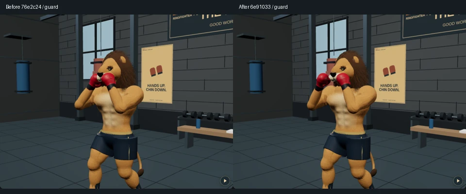
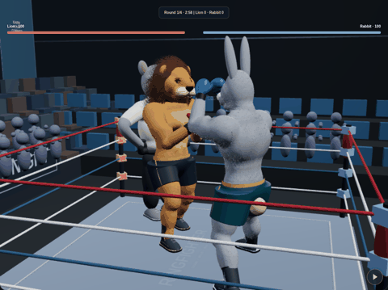
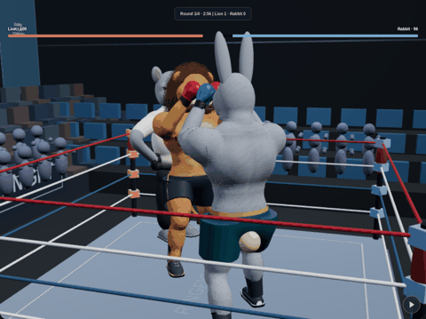

Actual app captures. Left: published baseline 76e2c24. Right: the reviewed candidate. Matching cameras and exercise time for guard, paw and rope; no generated artwork or realism score.



Software Chromium captures do not establish physical-phone performance. Implementation, checks and limitations · Capture metadata · Validation · Open RingFighter